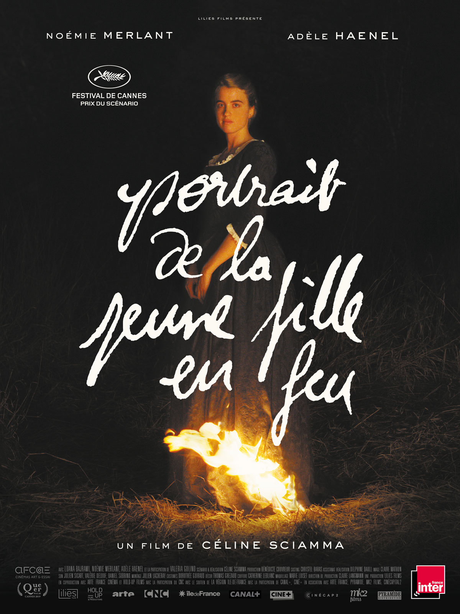
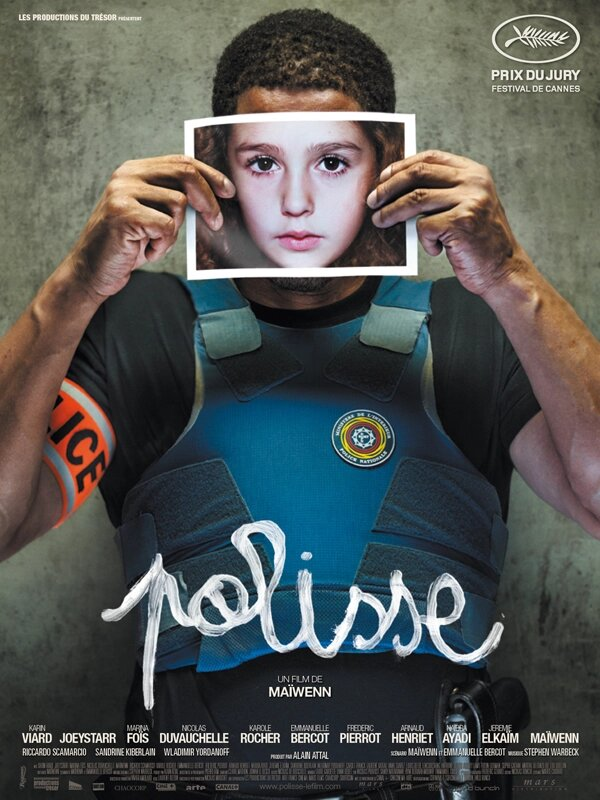

| Titre |
Année |
Réalisatrice |
Genre |
Récompenses |
Affiche |
| Portait de la jeune fille en feu |
2019 |
Céline Sciamma |
Drame |
Festival de Cannes : Prix du scénario, Queer Palm, ...
Prix du cinéma européen : Meilleur scénariste
César : Meilleur film (nomination), Meilleures actrice (nomination)...
Golden Globes : Meilleur film en langue étrangère (nomination)
BAFTA : Meilleur film en langue étrangère (nomination) |
 |
| Persepolis |
2007 |
Marjane Satrapi,
Winshluss |
Long-métrage d'animation, Biopic |
César :Meilleure adaptation, Meilleur premier film,...
Festival de Cannes : Prix du jury
Oscar :Meilleur film d'adaptation (nomination) |
 |
| Les Hirondelles de Kaboul |
2019 |
Zabou Breitman,
Eléa Gobbé-Mévellec |
Long-métrage d'animation, Drame |
César :Meilleur film d'animation (nomination),
Festival de Cannes : Prix du jury, Un certain regard (nomination),... |
 |
| Divines |
2016 |
Zhouda Benyamina |
Drame |
César : Meilleur espoir féminin, Meilleur premier film, Meilleure actrice dans un second rôle, Meilleure réalisation (nomination),...
Festival de Cannes :Caméra d'or
Golden Globe : Meilleur film en langue étrangère (nomination) |
 |
| Parvana, une enfance en Afghanistan |
2017 |
Nora Twoney |
Long-métrage d'animation |
Oscar : Meilleur film d'animation (nomination)
Festival d'Annecy :Prix du jury, Prix du public, ... |
 |
| Polisse |
2011 |
Maïwenn |
Drame, Policier |
César : Meilleur jeune espoir féminin, Meilleur montage, Meilleur Film (nomination), Meilleur actrice (nomination), Meilleur acteur dans un second rôle (nomination),...
Festival de Cannes :Prix du jury |
 |
| Pour Sama |
2017 |
Waad Al-Kateab
Edward Watts |
Documentaire |
Festival de Cannes :Oeil d'or
BAFTA :Meilleur Documentaire
OscarMeilleur film documentaire (nomination) |
 |
| Nomadland |
2020 |
Chloé Zhao |
Drame |
Golden Globes : Meilleur film dramatique, Meilleur réalisateur,...
BAFTA 2021 : Meilleur film, Meilleur réalisateur,...
Oscars 2021 : Meilleur film, Meilleur réalisateur, Meilleure actrice |
 |
| Titre |
Année |
Réalisatrice |
Genre |
Récompense |
Affiche |